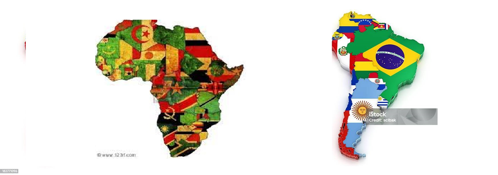
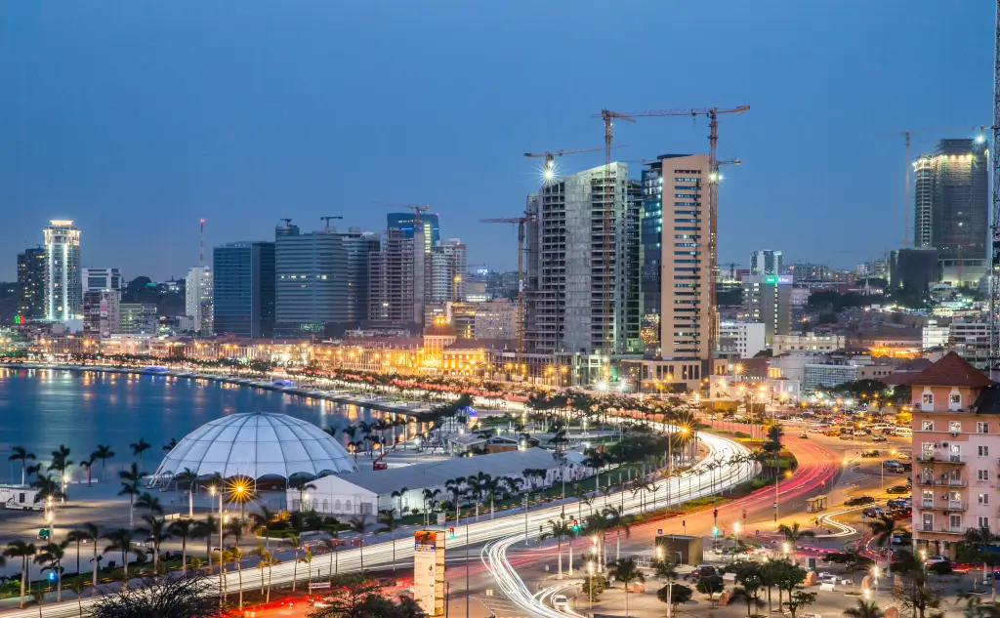
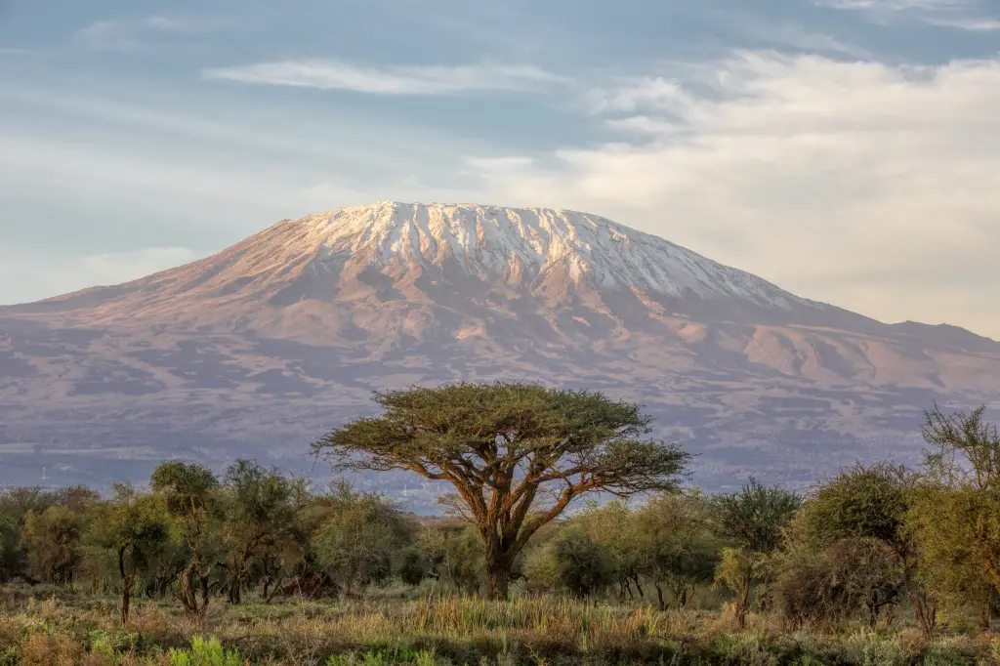
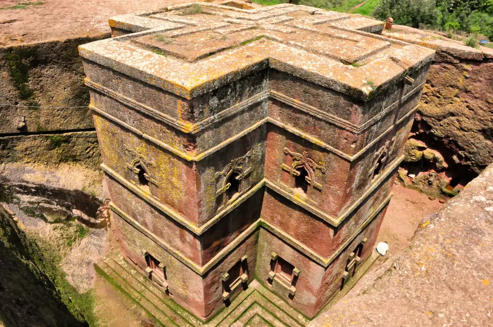

- Diferenciação da América do Sul e Àfrica -

Aqui está descrito as áreas ocupadas pela Àfrica e América do Sul
-CONTINENTE AFRICANO-

o Pôr do Sol mais renomado por alguns
internautas
A Àfrica sendo o terceiro continente do mundoum dos mais populosos. O continente africano, apesar de rico em biodiversidade e multicultural, sofre com a extrema pobreza." África é um dos seis continentes do mundo, sendo o terceiro maior em extensão territorial. O território estende-se por mais de 30 milhões de km², ocupando, aproximadamente, 20% da área continental da Terra. No continente vive mais de um bilhão de habitantes, fazendo dele o segundo mais populoso entre os demais"
-SAIBA MAIS!
. Luanda, Angola

A capital angolana é considerada o principal porto e pólo econômico do país. Fundada por portugueses, a cidade foi dominada por holandeses entre 1641 e 1648 e possui uma identidade mista. Palco de conflitos impulsionados pela guerra civil, a cidade tornou-se pacífica em 2002 e desde então tem fortalecido cada vez mais seus ares modernos e cosmopolitas. Suas atrações incluem bons museus...
. Monte Kilimanjaro, Tanzânia

Considerado como o ponto mais alto da África, o monte localiza-se na fronteira da Tanzânia com o Quênia e estende-se por uma altura de mais de 5800 metros.
|
. Igrejas Escavadas de Lalibela, Etiópia

Essa pequena cidade na Etiópia é marcada por suas igrejas monolíticas datadas do século 12 e esculpidas em rochas por ordem do Rei Lalibela, como uma réplica das construções encontradas em Jerusalém.
Os lugares apresentados aqui são só 3 de centenas!!!
VAI LÁ CONFERIR!